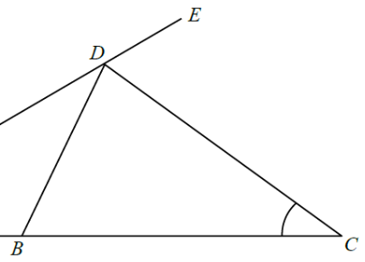

In the figure, ABC and ADE are straight lines. It is given that AB = BD and BC = CD. If ∠CDE = 66°, then ∠ACD =
A. 36° B. 38° C. 40° D. 44°

Let $\angle ACD = x$.
We aim to form an equation in $x$ using the angle properties of the two isosceles triangles.
In $\triangle ACD$, $\angle CDE$ is the exterior angle at $D$.
Ext. $\angle$ of $\triangle$: $\angle CAD = \angle CDE - \angle ACD = 66^\circ - x$
In $\triangle ABD$, $BD = BA$ (given)
$\therefore \angle BDA = \angle BAD = 66^\circ - x$ (base $\angle$s, isos. $\triangle$)
Exterior angle of $\triangle ABD$ at $B$:
$\angle CBD = \angle BAD + \angle BDA = (66^\circ - x)+(66^\circ - x) = 132^\circ - 2x$
In $\triangle BCD$, $CD = CB$ (given)
$\therefore \angle CDB = \angle CBD = 132^\circ - 2x$ (base $\angle$s, isos. $\triangle$)
Along straight line $ADE$:
$\angle BDA + \angle CDB + \angle CDE = 180^\circ$ (adj. $\angle$s on st. line)
$(66^\circ - x) + (132^\circ - 2x) + 66^\circ = 180^\circ$
$264^\circ - 3x = 180^\circ \;\Rightarrow\; 3x = 84^\circ \;\Rightarrow\; x = 28^\circ$
Check: $x=28^\circ$ gives $\angle BDA=38^\circ$, $\angle CDB=76^\circ$; $38+76+66=180$ ✓